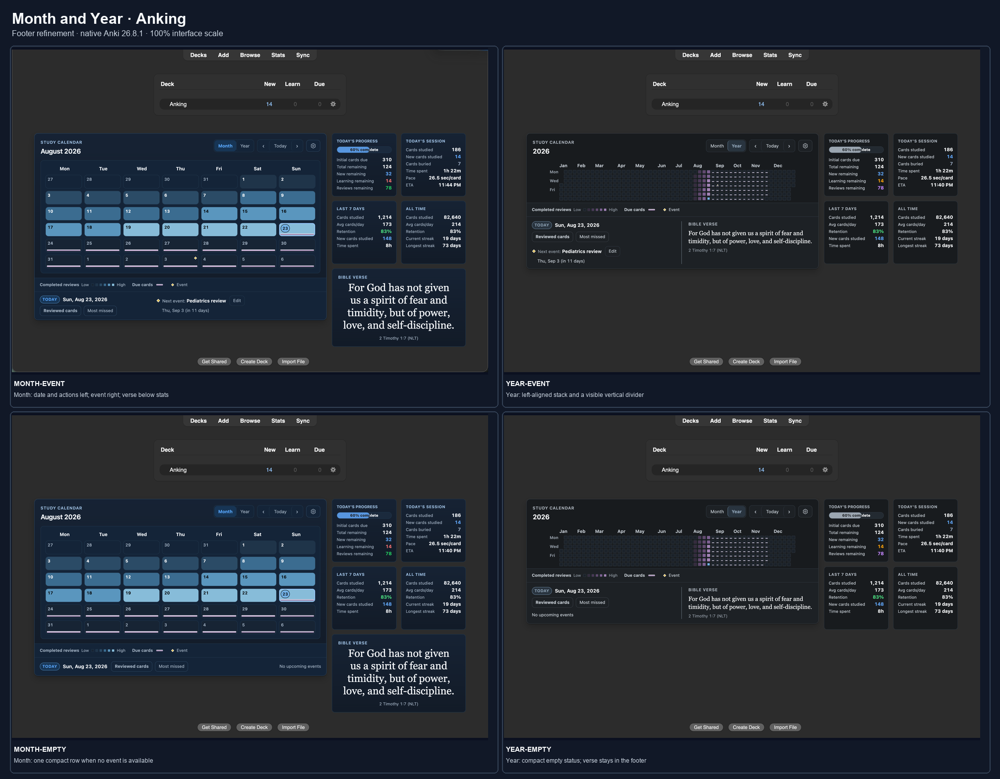
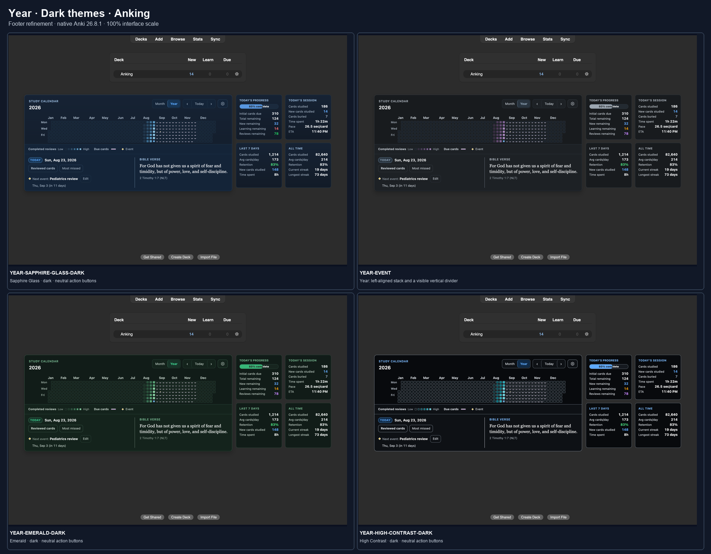
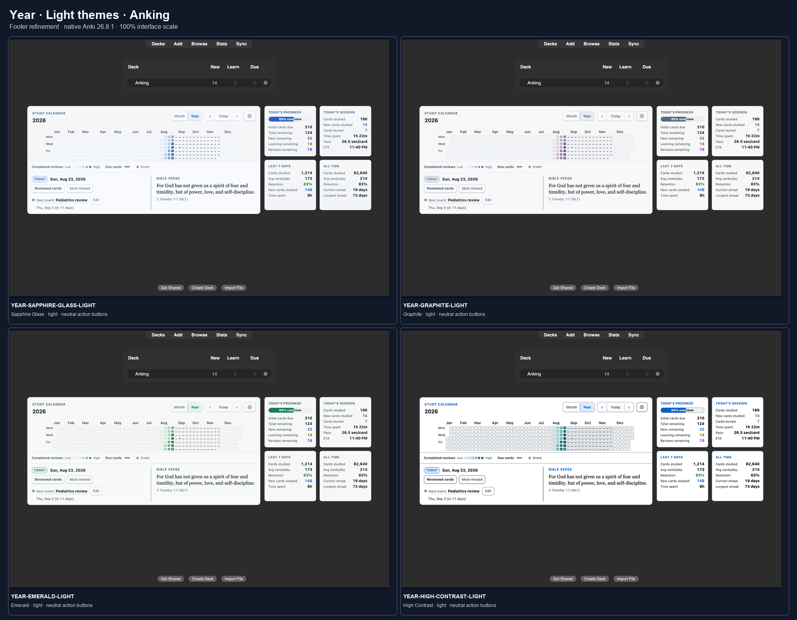
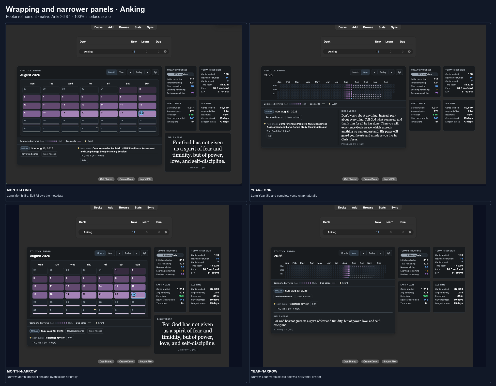
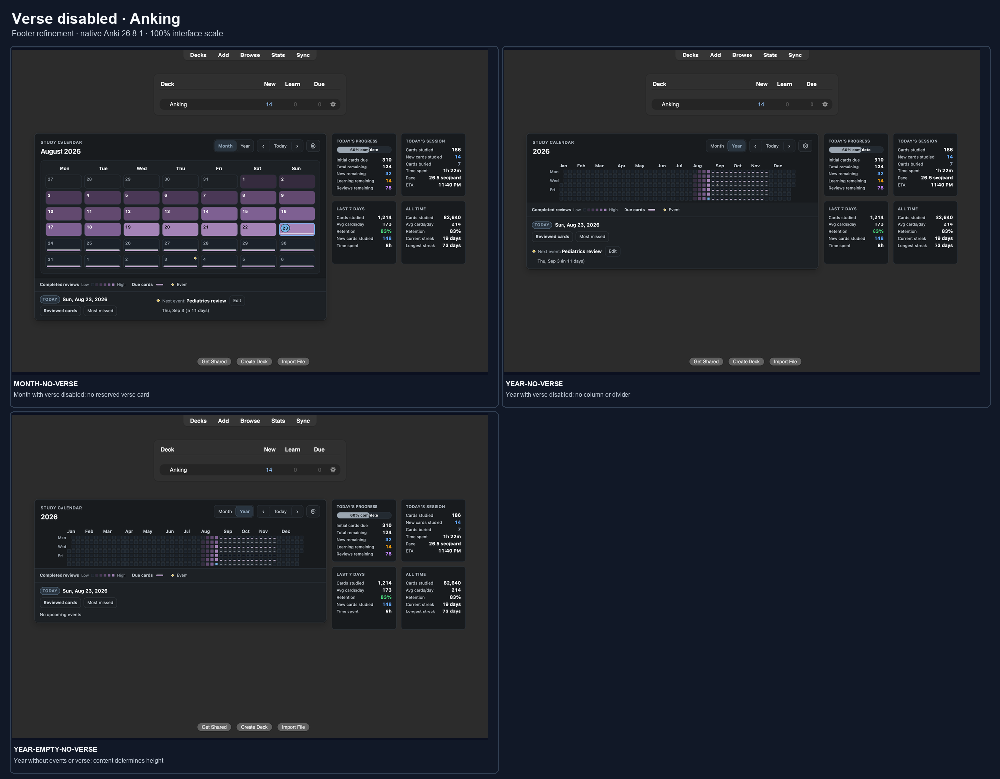

Reviewed cards now shares Most missed’s neutral surface and border. Year uses a visible divider and a left-aligned date, actions, and event stack. Month keeps its standalone verse below statistics.
The Year footer stacks below 660 CSS pixels of calendar content width; its divider becomes horizontal. All captures use 100% interface scale.





Focused native visual verification; not full release acceptance. Evidence details